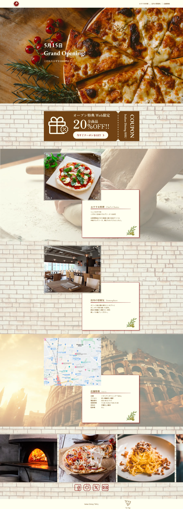
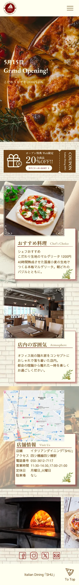

イタリアンレストランSHU
店舗紹介用LPサイト
LPサイト
2026年5月にオープンしたイタリアンレストラン「イタリアンダイニング SHU」の新規客獲得を目的としたLPサイトです。ヒアリングからサイト構築まで制作をしました。
制作範囲 Range
ヒアリング / デザイン / コーディング
使用ツール Tool
Figma / VS Code (HTML / CSS / JS)
制作期間 Period
2ヶ月間
サービス設定 Premise
- 40時間熟成の国産小麦生地を使用した本格ピザを、ランチ1,000円からという親しみやすい価格で提供。
- Web限定の「全品20%OFFクーポン」を強力なフックとし、競合店との差別化と初回来店の動機付け。
ターゲット Target
近隣のオフィス街に勤める、20代〜30代の女性（OL）
SNSのトレンドに敏感で、日常の中に「おしゃれで落ち着ける自分だけの場所」を求めている層
目的 Purpose
新開店キャンペーンの認知拡大と、Web限定クーポンによる集客の最大化。
素材のこだわりや店内の雰囲気を直感的に伝え、予約や来店のアクションへ繋げること。
情報設計 Information
冒頭でオープン情報と限定オファーを提示し、一気にユーザーの関心を惹きつけ。
その後、メニューのこだわり、店内の空間、アクセス情報の順に構成。
検討から来店までの心理的ハードルを段階的に解消する設計。
デザイン Design
ベージュと茶色をベースに、レンガ調の背景を配して「隠れ家」の温かみを表現。
#FFFFF0
#704214
あえて規則性を崩したレイアウトや上品な明朝体を使用することで、落ち着いた大人の空間を演出。
写真はシズル感を強調し、視覚から食欲と期待感を刺激するデザインに仕上げています。
その他 Others
下に添付した画像は、PCとスマホのデザイン完成稿です。

